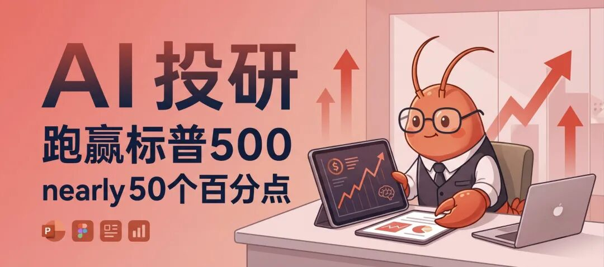

先说一个你可能也干过的事。
打开Claude或者ChatGPT,敲下"帮我分析一下拼多多值不值得买"。几秒钟后,你会收到一篇结构完整、用词专业的分析文章,列举了增长潜力,也列举了竞争压力,最后用"投资有风险,请谨慎决策"收尾。
读完什么感觉?好像很有道理,又好像什么都没说。这种分析没法拿来做决策,因为它压根没打算给你一个决策。
GitHub上有个叫ai-berkshire的项目,作者是xbtlin,标题挺大:"AI时代的伯克希尔"。看到这种命名我一般是警惕的,毕竟打着巴菲特旗号的项目一大把,大部分经不起细看。但这个项目附了两张实盘截图——2024年全年收益+69.29%,2025年至今+66.38%,同期标普500分别是+23.31%和+16.39%。跑赢标普500 46到50个百分点,两年累计收益超146万元。
这不是回测曲线,是真金白银。所以值得往下看看,这套框架到底是怎么组装出来的。
问题出在哪
作者对"为什么不能直接问AI"这件事想得很清楚。他的判断是,直接问AI得到的分析,问题不在能不能分析,而在分析质量和决策纪律。
具体拆开看是这么几件事。第一,普通AI回答喜欢两面讨好,"有增长潜力但也面临竞争压力"这种话术等于没说。ai-berkshire强制输出通过、不通过或者灰色地带的结论,并且要求带上具体价格区间。分析拼多多的例子里,激进型建议在95到105美元建仓20%,稳健型等回购政策明确后再建,保守型直接观望——三种仓位对应三种价格带,不是含糊其辞。
第二,单一视角的分析很容易自我印证。ai-berkshire让巴菲特、芒格、段永平、李录四个人格并行分析同一家公司,故意制造分歧。还是拼多多的例子:段永平看商业模式给3.7分,巴菲特看估值给4.4分("扣现金PE仅6.3倍,印钞机"),芒格从逆向思考给3.5分("护城河比想象中浅,抖音三年做到四万亿GMV"),李录从长期确定性只给2.0分("管理层文化有隐患,十年后不确定")。巴菲特说真便宜,李录说不确定就不买——这种真实的冲突,单个prompt很难制造出来,却恰恰是投资决策该有的样子。
第三个是我觉得最实在的一点:金融数据的精确性。LLM心算不靠谱,这事你要是让AI算过财务比率就知道。作者举了个例子,分析腾讯的时候,市值单位在"港币亿"和"人民币亿"之间搞混过。项目里有个financial_rigor.py工具,专门用Python的Decimal类型做精确十进制计算,不用浮点数,还能拿股价乘总股本去反向验算市值,偏差超过容差就告警。0.1+0.2要等于0.3,这句话在金融场景里不是玩笑。
架构长什么样
整个框架分三层。Skill层负责把"你要干什么"抽象成16个入口,深度研究、财报分析、行业筛选、持仓管理各有各的命令。Agent层是每个skill内部跑4个Agent并行,各自独立搜索、独立判断,互相不商量,最后由一个Team Lead角色综合。工具层管的是精确计算和多源交叉验证。
/investment-team是最直观的例子。敲一个公司名,4个Agent同时启动,分别顶着段永平、巴菲特、芒格、李录的视角去查资料、算数据、打分,然后汇总成一份综合报告。作者算过账:一个人直接问AI,上下文窗口只有一个;4个Agent并行,等于4倍搜索量、4倍信息源。用在美团上的实测报告里,四个维度分别打出四星、四星、三星、四星,综合3.8分,给出的建议是分三档价格区间逢低建仓。
16个skill里我留意到几个设计得比较巧的。/industry-funnel是一个漏斗式筛选,从全市场30到60家公司,按价值投资五条硬指标粗筛到10家以内,再精细分析,最后按"组合互补性"而不是打分排名终选3家——高确定性、中等弹性、高弹性各留一个位置。作者在2026年5月对AI四条子赛道做过实测,算力选出台积电、英伟达、SK海力士,模型选出Alphabet、Meta、阿里巴巴,应用层选出微软、Adobe、AppLovin。他从这批结果里得出一个观察:AI应用层最大的赢家不是AI原生公司,而是有渠道、有数据、工作流嵌入度高的成熟巨头——这跟1995到2000年互联网泡沫"卖铲子"的老故事对上了,当年亚马逊和苹果赢,Pets.com输。
/news-pulse是另一个我觉得挺实用的skill,专门应付股价异动时的信息焦虑。持仓突然跌了10%,不需要跑一次完整投研,10到15分钟做4维并行侦察——公司事件、监管政策、行业对手、市场情绪——判断这次波动是价值事件还是情绪波动,或者"真因不明"。作者拿腾讯4月17日到5月1日跌10.47%的那段做过实测,归因结论是70%到80%由资金面和情绪面驱动,基本面没有利空,卖方维持买入共识。里面还列了反证:段永平同期在卖腾讯的put(相当于看多),网易同期逆市涨了2%,排除了游戏行业整体出问题的可能。这种"列反证"的动作,比单纯罗列新闻更接近真实的分析过程。
防骗机制
作者用了"防骗"这个词,我觉得挺准。AI最危险的不是给错答案,是给一个看起来很对但经不起推敲的答案。框架里塞了几层机制专门对付这个。
信息丰富度按A/B/C分级,防止"资料查得多=确定性高"这种幻觉——分析泡泡玛特的时候直接标注B级,数据有限,推算指标注明置信度。芒格式逆向检验强制去想失败场景,"什么情况下这家公司会死",列出具体情景和概率,而不是泛泛地说"存在风险"。8条红线组成的快速否决清单,管理层诚信有污点就直接否决,不管估值多便宜——这条挺狠,等于把"再便宜也不买烂公司"这句巴菲特的话变成了硬规则而不是软建议。反共识检查专门去问"聪明人为什么在做空",目的是揪出被市场忽视的风险。留白原则是数据不够就标"灰色地带",不用推测装成确定性。
这几条单独看都不新鲜,凡是读过投资类书的人都听过类似说法。但把它们做成流程里的强制步骤,而不是分析师脑子里可能想起也可能忘记的经验,是另一件事。7家公司用同一套checklist筛选的结果里,茅台和腾讯通过,英伟达、美团、快手有条件通过,拼多多和泡泡玛特落在灰色地带——同样的标准跑7次,得到7个可以横向摆在一起比的结果,这才是"可复现"这个词真正的意思。
落地起来是什么样
这套东西是Claude Code的Skill合集,用法上没什么门槛。装好Claude Code之后,把仓库里skills/目录下的md文件拷到~/.claude/commands/,然后在Claude Code里直接敲命令就行,比如/investment-research 腾讯或者/investment-checklist 茅台, 英伟达, 苹果这种批量对比。项目里已经放了几份用框架跑出来的真实报告,拼多多、腾讯、7家公司对比都能在reports/目录下找到。
代码97.7%是Python,License是MIT,仓库现在18个star,4个fork——不算爆款,但这类严肃向的投研工具本来也不该追求爆款传播。作者在路线图里写了下一步想做历史回测,拿AI研报去对照实际股价表现,还想接入Wind、Bloomberg这类实时数据源,目前还没做。
对我来说,这个项目有意思的地方不在"AI能分析股票"这件事本身——这早就不新鲜了。有意思的是它把"分析质量不可控"这个AI应用的老毛病,用工程手段(多Agent对抗、强制结论、精确计算、置信度标注)一点点缝住了。这个思路其实不止能用在投资上,任何需要AI给出可复用、可追责判断的场景,都值得参考这套"防骗机制"的设计。
Github：xbtlin/ai-berkshire
免责声明照抄一下:本项目仅供学习和研究目的,不构成任何投资建议,请始终做好自己的尽职调查。